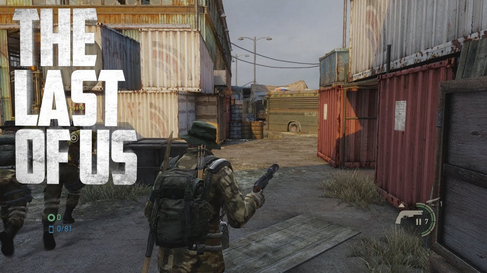
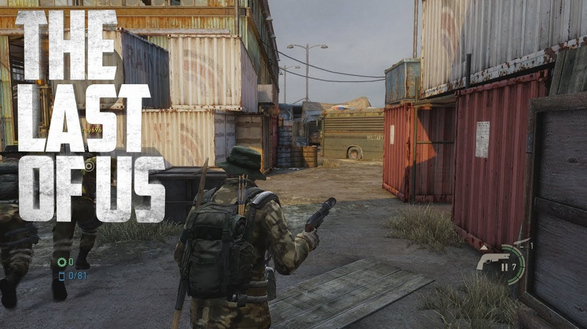

The Last of us is a game about a man named Joel living in a world where a virus turned most of humanity into fungal zombies. In this game Joel is tasked with delivering a girl named Ellie whom is immune to the virus to the Firefly base to develope a cure.
 Crafting items can be obatined during the gameplay and can be used to craft mines, shivs, smoke bomb, medkits or upgrade melee items.
Crafting items can be obatined during the gameplay and can be used to craft mines, shivs, smoke bomb, medkits or upgrade melee items.
When you complete the game, you will unlock a new difficulty, new game plus, a dlc about what Ellie did before meeting Joel and a multiplayer mode is unlocked. The multiplayer is a battle royale between you and many other players.
 
